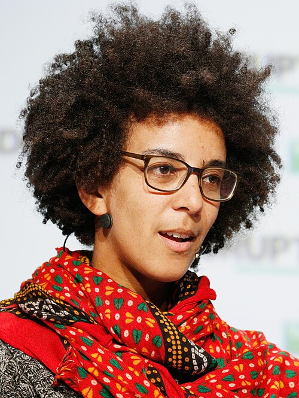
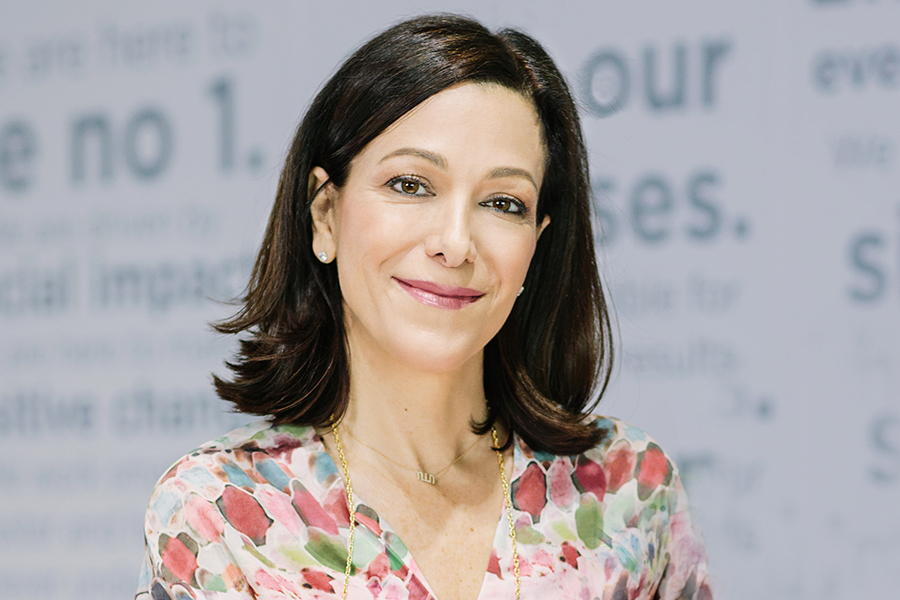

Dr. Rediet Abebe

Dr. Rediet Abebe is a computer scientist specializing in algorithms and artificial intelligence. She was born and raised in Addis Ababa, Ethiopia. She is the first Black woman to earn a Ph.D. in Computer Science from Cornell! She is currently an assistant professor of computer science at the University of California, Berkeley.
She co-founded EAAMO Bridges (formerly known as MD4SG) alongside Kira Goldner in 2016. The goals of MD4SG is to use algorithms and mechanism design to tackle inequality. Her work with MD4SG had her honored as a pioneer in the 2019 MIT Technology Review's Innovators Under 35. She also co-founded Black in AI, a network of 1,500 researchers working on AI, with Timnit Gebru, in 2016.
Watch Dr. Abebe in Action
Explore Dr. Abebe's Work
Learn more about her projects and research through these resources:
- EAAMO Bridges: Visit the EAAMO Bridges Initiative
- Black in AI: Discover the Black in AI Network
Josie's Tech Hero: Dr. Timnit Gebru

For My Tech Hero I chose Dr. Timnit Gebru. She is a researcher and computer scientist who has challenged the ethics of powerful tech industries and who values the impacts of AI of marginalized communities. Dr. Gebru did her education at Stanford University and later held positions at Apple, Microsoft Research, and Google. At these various companies shes led initiatives on understanding the ethical implications of artificial intelligence. Something that drew me towards her work was her co-authorship position on the research paper, Gender shades. In this research, she exposed how facial recognition systems systematically fail to recognize darker skinned women. In order to audit these models, Dr. Gebru introduced different types of intersectionality, analyzing how accuracy collapsed when race and gender were put together. In the study, commercial systems performed almost perfectly on light skinned men, but their error rates significantly increased when performing on darker skinned women. This research opened up conversation on how data is being trained, and who its being trained on. This research exposed significant racial and gender disparities in algorithmic models.
Gebru has criticized the lack of diversity in Silicon Valley, specifically with the exclusion of Black women in the development of AI. This matters because it has the potential to produce harmful, exclusionary software. I found it really inspirational how she was able to challenge the industry that she works for, which many feel they cannot do. Beyond her research, her willingness to speak the truth about how unchecked systems can systemically affect marginalized groups makes her an inspirational role model.
Recently her research looks at how the entire supply chain of AI affects humans. She is looking at how tech companies often hide the exploited labor behind AI. She advocates for the data labelers and content moderators doing painful, underpaid work, and even exposes new forms of forced labor where "zombie trainers" generate AI data without their knowledge.
Watch Dr. Gebru in Action
Explore Dr. Gebru's Work
Learn more about her research through these resources:
- DAIR Institute: Read about AI-Fueled Inequities
- Gender Shades: Read about AI-Fueled Inequities
Raneem's Tech Hero: Mona Ataya

For my tech hero, I chose Mona Ataya, a Palestinian entrepreneur who co-founded Mumzworld in 2011. Mumzworld is an online marketplace for mothers and families in the Middle East. She noted the difficulties of parents finding and comparing products for their childrren and helped build a platform around that problem.
What stands out to me is that Mumzworld offers more than a way to shop. Parents are able to compare products, read reviews and find guides in Arabic and English. I like that Mona's approach started with understanding what families in the region actually needed from an online platform. This shows that technology can be effectively shaped by the people using it, rather than simply expecting everyone to adapt to the same design.
As a Palestinian woman studying information science, I find her story very meaningful. I often hear about tech founders from all quite similar backgrounds, so seeing someone connected to my background build a platform used across the Middle East makes this field feel more reachable to me. Her work is a reminder that a tecnology idea can start by noticing an everyday problem that other people have learned to work around.
Mona Ataya's Ted Talk
Explore Mona Ataya's Work
Learn more about Mumzworld and her work through these resources:
- Mumzworld: Explore Mumzworld's media and press
- Founding Story: Read how Mumzworld began